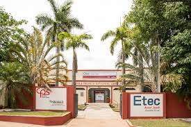

Etec Amin Jundi
História da escola
Fundada em 1962 como Ginásio Artesanal, foi transformada em Ginásio Industrial em 1972, oferecendo os cursos de Marcenaria, Mecânica e Desenho Técnico em Mecânica.
Em 1980 o Ginásio Industrial foi fechado e teve suas atividades paralisadas por dez anos, até 20 de agosto de 1990, quando foi refundado como Escola Técnica Estadual de 2º Grau de Osvaldo Cruz, pertencendo à Divisão de Supervisão e Apoio às Escolas Técnicas Estaduais - DISAETE, da Secretaria Estadual de Educação.
Em 1994 passou a integrar a rede de escolas do Centro Paula Souza, oferecendo os cursos técnicos em Enfermagem, Contabilidade e Auxiliar de Enfermagem.
Em 1997 foi montado o primeiro laboratório de informática da unidade, fato que possibilitou a implantação do curso Técnico em Processamento de Dados, uma solicitação antiga da comunidade. Esse curso teve sua nomenclatura alterada para Técnico em Informática no ano de 1999.
A partir de 1998 passou a oferecer o Ensino Médio regular, no período da manhã, além de implantar o curso Técnico em Vendas, noturno, com vistas a qualificar mão de obra para o setor de comércio, uma das áreas econômicas mais importantes do município e região.
No segundo semestre de 2000, a Etec Amim Jundi foi incumbida da implantação e gestão de classes descentralizadas no município de Tupã, ficando responsável pela mesma até 30/03/2006, quando a extensão foi transformada em Unidade do CEETEPS, recebendo a princípio o nome de Etec de Tupã, posteriormente alterado para Etec Prof. Massuyuki Kawano.
Ainda no ano 2000 foram implantados os cursos de Técnico em Administração e Segurança do Trabalho. No ano seguinte, em parceria com usinas sucroalcooleiras da região, foi implantado o curso Técnico em Açúcar e Álcool. Também neste ano, foi implantado o curso Técnico em Turismo.
Considerando a vocação regional para a área de serviços e apostando no crescimento de cursos da Área de Gestão, em 2003 foram implantados os cursos de Técnico em Assessoria de Gerenciamento Empresarial e em Logística. No ano seguinte foram implantados os cursos de Técnico em Gestão Ambiental e Técnico em Química.
Em 2006, considerando o expressivo número de micro e pequenas empresas existentes em Osvaldo Cruz e região, foi implantado o curso de Técnico em Gestão de Pequenos Negócios.
Em 2007 foi implantado um novo curso na área de informática, o Técnico em Web Design, cuja denominação foi alterada posteriormente para Informática para Internet.
No ano de 2009, foi implantada a primeira turma de Especialização Técnica em Enfermagem do Trabalho, atendendo a uma necessidade do mercado de trabalho (entidades públicas e privadas) e uma reivindicação dos alunos concluintes do curso Técnico em Enfermagem, que tinham o interesse de aumentar sua qualificação profissional. Também houve a implantação do curso Técnico em Comércio, que substituiu o curso Técnico em Gestão de Pequenos Negócios.
No mesmo ano teve início a uma grande reforma na estrutura física da escola. Foram construídas 8 novas salas de aula, houve adequações e reformas diversas em todo o prédio, construção de novos banheiros para alunos e alunas, cobertura dos acessos às salas de aula, aumento do pátio coberto, ampliação da Secretaria Acadêmica e da Diretoria de Serviços Administrativos, entre outros. Esta obra foi concluída em 2010.
Sensível às diferentes necessidades de qualificação da população, no intuito de trabalhar em sintonia com os projetos e propostas dos Governos Estadual e Federal, a Etec Amim Jundi tem oferecido, além dos cursos regulares de Ensino Médio e Técnico, cursos do Programa Via Rápida para o Emprego, do Projeto Funap - Fundação de Amparo ao Preso, do Programa Nacional de Acesso ao Ensino Técnico e Emprego – Pronatec e do PEAD – Programa Emergencial de Auxílio Desemprego. Para o ano de 2015 estão previstos alguns cursos pelo Programa Via Rápida para o Emprego.
O Programa Via Rápida para o Emprego tem por objetivos qualificar o trabalhador desempregado para exercer seus direitos ao trabalho e à cidadania, ampliar suas oportunidades de trabalho na sociedade e aumentar a probabilidade de obtenção de trabalho, visando à geração ou elevação de renda e à redução dos índices de desemprego e subemprego. Nesta Unidade, desde 2009, já foram oferecidos os cursos de Assistente Administrativo, Auxiliar de Logística, Técnicas de Vendas, Informática Básica e Ajudante de Laboratório Químico, além de algumas turmas de extensão na cidade de Bastos, de Assistente Administrativo e Operador de Caixa, Produção de Açúcar e Álcool nas cidades de Parapuã e Salmourão e Almoxarife e Estoquista em Piacatu.
Já o Projeto Funap – Fundação de Amparo ao Preso, iniciado nesta Etec em 2010, oferece cursos de qualificação profissional à população prisional em vias de adquirir a liberdade, propiciando à mesma a aquisição de competências e habilidades profissionais que contribuam para a geração de renda, empregabilidade e laborabilidade, para a conquista da cidadania, visto que estas pessoas retornarão à vida em sociedade e necessitarão de meios dignos e idôneos de subsistência. Nesta Unidade, já foram oferecidas diversas turmas dos cursos de Confeitaria Artesanal, Pedreiro-Assentador de Pisos e Azulejos, Pedreiro Assentador de Tijolos, nas Penitenciárias de Pracinha e Osvaldo Cruz.
O Pronatec - Programa Nacional de Acesso ao Ensino Técnico e Emprego visa expandir, interiorizar e democratizar a oferta, presencial e à distância, de Cursos Técnicos e de Formação Inicial e Continuada (FIC) a estudantes, trabalhadores diversos, pessoas com deficiência e beneficiários dos programas federais de transferência de renda.
O PEAD – Programa Emergencial de Auxílio Desemprego visa proporcionar ocupação, qualificação profissional e renda para trabalhadores desempregados há no mínimo 1 ano, maiores de 17 anos e residentes há pelo menos 2 anos no Estado de São Paulo, por meio de uma atividade produtiva, através das Frentes de Trabalho municipais e cursos de qualificação profissional, realizados na Etec. O bolsista permanece no programa por até 9 meses, com jornada de atividades de 6 horas diárias, 4 dias por semana e se obriga a participar, no quinto dia, de um curso de qualificação profissional ou alfabetização. Recebe ainda, mensalmente, uma bolsa-auxílio, crédito alimentação e auxílio-deslocamento, quando for o caso.
No ano de 2010, foi implantada a primeira turma do curso Técnico em Farmácia, contando desde o início com laboratório próprio, além da primeira turma da Especialização Técnica em Java-WR, disponibilizando aos alunos concluintes mais uma opção de qualificação profissional no eixo tecnológico de Informação e Comunicação.
Com a expansão do número de alunos e o aumento da estrutura física, em 2010 ocorreu a contratação de seis novos funcionários por Concurso Público, a maior já realizada na história da escola, deste segmento.
A reforma do prédio, iniciada no ano de 2009, foi concluída em 01/09/2010, num investimento total de R$ 1.762.782,07 (um milhão, setecentos e sessenta e dois mil, setecentos e oitenta e dois reais e sete centavos).
No segundo semestre de 2010, teve início a primeira turma do curso Técnico em Redes de Computadores, contando com os laboratórios já existentes na unidade.
No início de 2011 foram implantados os cursos técnicos em Dança Esportiva, numa iniciativa pioneira entre as Etecs do Centro Paula Souza, e Agente Comunitário de Saúde, para atender à demanda de pessoas que já trabalham na área e precisam da qualificação.
Em 2012, tivemos o início da primeira turma do curso Técnico em Administração Integrado ao Ensino Médio, com aulas em período integral, de manhã e à tarde. Este curso foi implantado para atender a uma solicitação do Centro Paula Souza, de disponibilizar à população mais essa modalidade de ensino técnico, na forma integrada, para atender às pessoas que tenham concluído o Ensino Fundamental e pretendam desenvolver, ao mesmo tempo, competências de formação geral e de formação profissional, numa única escola, com uma única matrícula.
Ainda em 2012 teve início o funcionamento do curso Técnico em Administração na Extensão do Município de Pracinha, cuja primeira turma se formou em 2013, no segundo semestre.
No segundo semestre de 2013, teve início a primeira turma do curso Técnico em Finanças, contando com os laboratórios já existentes na unidade, além da implantação da Especialização Profissional Técnica de Nível Médio em Centro Cirúrgico e Instrumentação Cirúrgica, para atender às necessidades do mercado de trabalho e dos alunos formados no curso Técnico em Enfermagem que querem aumentar sua qualificação profissional na área.
Em agosto de 2013 foi criada a Agência de Inovação INOVA Paula Souza – órgão da Superintendência do Centro Paula Souza, que organiza um evento de Empreendedorismo & Startups acessível a toda a Comunidade Centro Paula Souza, chamado Desafio INOVA Paula Souza de IDEIAS e NEGÓCIOS, cujo objetivo central é promover a educação empreendedora e descobrir ideias que possam ser postas em prática. Trata-se de uma competição de Modelos de Negócios entre equipes formadas por estudantes do ensino médio, técnico, tecnológico e pós-graduação, egressos e professores de Etecs e Fatecs – podendo incluir membros externos à comunidade do Centro Paula Souza, que tenham como base ideias que explorem a relação entre o que é técnica ou tecnologicamente factível e o que é estrategicamente viável, buscando atender às necessidades de pessoas e contribuir para o desenvolvimento sustentável. As equipes têm o desafio de transformar as suas ideias em negócios que se encaixem em um dos 10 Eixos Tecnológicos: Produção Industrial, Produção Alimentícia, Controle e Processos Industriais, Gestão e Negócios, Turismo, Hospitalidade e Lazer, Infraestrutura, Recursos Naturais, Ambiente, Saúde e Segurança, Informação e Comunicação e Produção Cultural e Design. A partir de 01/04/2014 a Etec Amim Jundi passou a contar com um docente atuando dentro da Escola diretamente com o Desafio Inova Paula Souza, promovendo reuniões com alunos e docentes, objetivando direcionar os temas e pesquisas dos Trabalhos de Conclusão de Curso-TCCs de todos os cursos existentes na U.E. para a área de empreendedorismo. Sobre os temas e trabalhos em andamento, busca-se identificar aqueles que têm perfil inovador e empreendedor, para que seja desenvolvido um trabalho mais aprofundado com esses alunos. Também é feito um contato com os alunos cujos Trabalhos ainda estejam em fase inicial, no sentido de orientá-los e incentivá-los a conduzir suas pesquisas para a inovação e o empreendedorismo, de modo que eles percebam que o perfil das ocupações profissionais está mudando, sendo que não adianta pensar somente em soluções inovadoras para empresas e problemas já existentes, mas também desenvolver pesquisas acerca de ideias que possam ser convertidas em negócios, explorando a relação entre o que é técnica ou tecnologicamente factível e o que é estrategicamente viável, buscando atender às necessidades de pessoas e contribuir para o desenvolvimento sustentável. Com esse trabalho, espera-se que haja grandes avanços rumo à inovação e ao empreendedorismo, nos Trabalhos de Conclusão de Curso desta Etec dos próximos anos.
No período de 06 a 08 de outubro de 2014, a Escola Técnica Estadual Amim Jundi, em parceria, com a Agencia Inova Paula Souza, Secretaria de Indústria e Comércio de Osvaldo Cruz, SEBRAE – Presidente Prudente e ACEOC – Associação Comercial e Empresarial de Osvaldo Cruz, realizou a Primeira Semana de Empreendedorismo e INOVAÇÃO de Osvaldo Cruz. O evento é uma idealização da Agencia de Empreendedorismo e INOVAÇÃO do Centro Paula Souza, visando incentivar a educação empreendedora. O evento versou sobre assuntos ligados ao ambiente de criação empresarial e histórias de sucesso no âmbito do empreendedorismo. Outra vertente da semana foi a apresentação de ideias inovadoras que surgiram dentro das salas de aula, a fim de motivar mais alunos a agirem de forma criativa e empreendedora para gerar emprego e melhorar a qualidade de vida das pessoas. O evento foi gratuito e aberto a toda a comunidade.
No segundo semestre de 2014, conforme Parcerias firmadas com as respectivas Prefeituras Municipais tiveram início os cursos nas extensões dos municípios de Sagres, na EMEF Prefeito Atilio Sani, com uma turma de Técnico em Informática, e no município de Parapuã, na EMEF Profa. Zizi Pereira de Souza, com uma turma de Técnico em Administração.
No primeiro semestre de 2014, para dar continuidade à parceria com a Prefeitura de Pracinha, foi aberta uma turma de Técnico em Logística na extensão que funciona naquela cidade.
Ainda em 2014, na Etec sede, houve a implantação do curso Técnico em Programação de Jogos Digitais, contando com os laboratórios e equipamentos já existentes na escola, cuja primeira turma funcionou no período da tarde.
No primeiro semestre de 2015, na Etec sede, teve início a primeira turma do curso Técnico em Recursos Humanos, contando com os laboratórios já existentes na unidade, para atender às necessidades do mercado de trabalho, no período noturno.
No segundo semestre de 2015, em continuidade à parceria com a Prefeitura, teve início uma nova turma de Técnico em Administração Em Pracinha.
No primeiro semestre de 2016, dando continuidade às Parcerias firmadas com as respectivas Prefeituras Municipais, tiveram início novas turmas nas extensões dos municípios de Sagres, na EMEF Prefeito Atilio Sani, do curso Técnico em Administração, e no município de Parapuã, na EMEF Profa. Zizi Pereira de Souza, também de Técnico em Administração.
No primeiro semestre de 2017 foi aberta uma nova turma de Técnico em Comércio na Etec sede, por decisão do Conselho de Escola. A parceria com a Prefeitura de Pracinha teve alteração, não sendo autorizada a abertura de uma nova turma de Técnico em Administração. O setor de convênios sugeriu que seja aberta uma turma de Qualificação Profissional Básica, através do Programa Via Rápida, mas isso está sendo avaliado pela Prefeitura daquele município.
No segundo semestre de 2017, dando continuidade às Parcerias firmadas com as Prefeituras Municipais, tiveram início novas turmas nas extensões dos municípios de Sagres, na EMEF Prefeito Atilio Sani, do curso Técnico em Recursos Humanos e no município de Parapuã, na EMEF Profa. Zizi Pereira de Souza, de Técnico em Administração.
A Etec Amim Jundi tem se destacado muito, tanto em sistemas de avaliação internos quanto externos. O IDTEC (Índice de Desenvolvimento do Ensino Técnico e Tecnológico do Estado de São Paulo) da Unidade tem atingido ótimos índices nos últimos anos, com destaque para 2012, que ficou em 92,85. Foram avaliadas 202 Etecs e apenas 63 atingiram a faixa da excelência e qualidade, dentre as quais a nossa. Com a pontuação obtida a Etec Amim Jundi superou o índice de 2011, que era 92,46, bem como sua meta que era 92,66. Com isso se tornou “benchmark” (referência) dentro do Centro Paula Souza naquele ano.
No ENEM - Exame Nacional do Ensino Médio de 2014, a Etec obteve pontuação média de 512,81, em 2013 a Escola obteve pontuação média de 572,97, de acordo com os dados divulgados pelo Ministério da Educação, ficando entre as melhores escolas estaduais da região. Com esse resultado a Etec Amim Jundi também obteve o 1º (primeiro) lugar no Município naquele ano. Nos anos anteriores não tem sido diferente, com média de 558,76 em 2012 e 561,92 em 2011, ficando a Escola muito bem pontuada, tanto em nível local como regional. Em 2014 tivemos a grata surpresa de termos dois alunos avaliados com notas que estão entre as melhores do país, sendo nota 973,6 em Matemática (a melhor nota do país) e nota 980,0 em Redação, cuja pontuação máxima foi 1.000. Em 2015 a Etec obteve pontuação média de 561,21 sem a Redação e 575,77 com a Redação, ficando em primeiro lugar na cidade. Em nível regional a Etec Amim Jundi ficou com o segundo lugar entre as escolas públicas, atrás apenas da Etec Milton Gazetti, de Presidente Venceslau, que conseguiu nota de 586,86. A partir do ano 2016 o Governo do Estado deixou de divulgar notas por Escola, mas temos conhecimento de que nossos alunos continuam obtendo ótimos resultados no Enem. Prova disso é o fato dos mesmos conseguirem boas colocações nos vestibulares de Instituições Públicas Federais ou Estaduais, onde um dos critérios de seleção é a nota do Enem.
No SARESP - Sistema de Avaliação do Rendimento Escolar do Estado de São Paulo, a Escola também tem ficado entre as melhores, entre as Escolas Públicas da cidade e região. De acordo com dados apresentados pelo Governo do Estado, em 2014 a Etec Amim Jundi ficou em 1º lugar no município de Osvaldo Cruz, entre as Escolas Públicas, tendo sido avaliada nos componentes de Língua Portuguesa, Matemática, Ciências e Ciências da Natureza e Redação. Foram 148 alunos avaliados, ficando a Etec muito acima da média estadual nos componentes curriculares citados: Língua Portuguesa - média estadual das escolas públicas (265,70) - nota da Etec Amim Jundi (294,80); Matemática - média estadual das escolas públicas (270,50) - nota da Etec Amim Jundi (312,90); Ciências e Ciências da Natureza - média estadual das escolas públicas (276,1) - nota da Etec Amim Jundi (313,40); Ressalta-se que a nota de redação não foi divulgada por escola, apenas de maneira genérica, porém a média da rede estadual foi de 67,40 e a das Etecs foi de 76,90. No ano de 2013 a Etec Amim Jundi ficou em 1º lugar no município de Osvaldo Cruz e na região, tendo sido avaliada nos componentes de Língua Portuguesa, Matemática, Geografia, História e Redação. Foram 118 alunos avaliados, ficando a Etec muito acima da média estadual nos componentes curriculares citados: Língua Portuguesa - média estadual das escolas públicas (262,70) - nota da Etec Amim Jundi (317,80); Matemática - média estadual das escolas públicas (268,70) - nota da Etec Amim Jundi (345,20); Geografia - média estadual das escolas públicas (271,5) - nota da Etec Amim Jundi (324,70); História - média estadual das escolas públicas (268,40) - nota da Etec Amim Jundi (335,20). Ressalta-se que a nota de redação não foi divulgada por escola, apenas de maneira genérica, porém a média estadual foi de 62,50 e das ETECs 72,10. Em 2016 a Etec obteve o primeiro lugar no município, tendo sido avaliada nos componentes de Língua Portuguesa e Matemática. Foram, ao total, 147 alunos avaliados, ficando a ETEC acima da média das escolas da Diretoria de Ensino e também acima da média estadual nos componentes curriculares avaliados, com nota 314,30 em Português, sendo a média da Diretoria de Ensino 275,50 e a média estadual 273,00; nota 324,70 em Matemática, sendo a média da Diretoria de Ensino 283,80 e média estadual 283,80. Em 2017 a ETEC Amim Jundi ficou novamente em 1º lugar no Município, de acordo com os dados apresentados pelo Governo do Estado. A pontuação obtida pela Etec em 2017 foi superior à de 2016, demonstrando que a ETEC continua se superando e se esforçando para oferecer sempre um ensino de qualidade aos seus alunos. Foram 153 alunos avaliados, ficando a ETEC acima da média das escolas da Diretoria de Ensino e também acima da média estadual nos componentes curriculares avaliados, com nota 316,80 em Português, sendo a média da Diretoria de Ensino 275,40 e a média estadual 274,50; nota 328,30 em Matemática, sendo a média da Diretoria de Ensino 286,00 e média estadual 278,30.
A Etec Amim Jundi também tem se destacado na participação em diversas Olimpíadas e Concursos, entre elas a Olimpíada Brasileira de Astronomia e Astronáutica (OBA), realizada anualmente pela Sociedade Astronômica Brasileira (SAB). Em 2013, a OBA contou com a participação de mais de 200 mil alunos e mais de 16 mil escolas (públicas e particulares). Os 1000 alunos do ensino médio com as maiores notas na competição foram convidados para participar da Seleção para as Olimpíadas Internacionais de Astronomia. Um aluno conseguiu medalha de Ouro, com nota 10,0 (a nota máxima), classificando-se posteriormente para as Olimpíadas Internacionais de Astronomia, entre os 1000 alunos do ensino médio com as maiores notas, tendo sido convidado, também, para realizar a prova final em Barra do Piraí – RJ, com grandes chances de se classificar entre os melhores e representar o Brasil. Dentre as premiações deste aluno apenas durante sua estada na Etec, temos 10 medalhas de Ouro, 6 de Prata, 2 de Bronze, 2 menções honrosas e 1 medalha de Honra ao Mérito, em diversas Olimpíadas e Concursos de fomento ao estudo e à pesquisa. Em 2015, na Olimpíada Brasileira de Matemática das Escolas Públicas, a ETEC teve 14 alunos premiados com menção honrosa. Já na Olimpíada Brasileira de Robótica – OBR 2015, um de nossos alunos destacou-se, recebendo a Medalha de Mérito Nacional, dentre mais de 92 mil alunos participantes. No dia 16 de dezembro de 2015 a Câmara Municipal de Osvaldo Cruz entregou diversas Moções de Aplausos, tanto para a ETEC Amim Jundi como para vários de seus alunos, em razão de participações, conquistas e resultados divulgados durante o ano de 2015, como OBMEP/2015, para alunos medalhistas da Olimpíada Internacional Matemática Sem Fronteiras, para a ETEC em razão dos excelentes resultados obtidos no ENEM 2014. A Unidade ainda teve 24 (vinte e quatro) alunos contemplados com Medalha de Bronze na Olimpíada Internacional Matemática sem Fronteiras de 2015. Sete alunos das Etec conseguiram Certificado de Menção Honrosa na Olimpíada Brasileira de Matemática das Escolas Públicas 2015. Também tivemos medalhistas de Bronze da Olimpíada Internacional Matemática Sem Fronteiras 2015, sendo 07 do 2º ano e 07 do 3º ano.
Houve 08 alunos do terceiro ano como medalhistas de Bronze na Olimpíada Internacional Matemática Sem Fronteiras 2016, além de 01 medalha de bronze na Premiação Nacional e 01 medalha de bronze na Premiação Estadual da mesma, o que nos rendeu uma Moção de Aplausos da Câmara Municipal de Osvaldo Cruz. Também tivemos cinco alunos classificados para a Fase 2 da Prova Teórica Nível 5 da Olimpíada Brasileira de Robótica em 2016. A Etec teve participação na 12ª OBMEP - Olimpíada Brasileira de Matemática das Escolas Públicas, em 2016, quando 12 alunos receberam menção honrosa. Obteve ainda medalha de prata nas Olimpíadas Canguru de Matemática Brasil 2016. No intuito de incentivar os alunos do Ensino Médio e do Técnico Integrado ao Ensino Médio e prepará-los para a vida e para os Vestibulares, a Etec vem participando ativamente, há vários anos, da Olimpíada Brasileira de Física das Escolas Públicas. Houve também 10 participantes da Olimpíada Brasileira de Geografia, tendo uma aluna obtido medalha de prata. Para a Olimpíada de Língua Portuguesa, vários materiais foram preparados pelos alunos e dois foram selecionados e enviados à Comissão Municipal. Também tivemos um aluno do 2º ano do Ensino Médio classificado para a 2ª fase da Olimpíada de Matemática da Unicamp – OMU.
Também não poderíamos deixar de mencionar os ótimos resultados obtidos pelos alunos do Ensino Médio e ETIM nos Vestibulares, sobretudo das Instituições Públicas, que representam o objetivo maior para boa parte deles e de seus pais ou responsáveis. Em 2012 foram 41 alunos aprovados, em 2013 foram 49 alunos, em 2014 foram 41 alunos e em 2015 foram 60 alunos aprovados em Instituições Públicas Federais ou Estaduais, além de centenas de alunos aprovados em Instituições Particulares, com o Prouni ou não. No ano de 2016 houve 34 aprovações de alunos em Instituições Públicas Federais ou Estaduais. Em 2017 houve 32 alunos aprovados em Instituições Públicas Federais ou Estaduais e em 2018 foram 31.
Em 2016 a Etec também teve a felicidade de ter um Projeto, desenvolvido por alunos com orientação de um professor de informática, selecionado como um dos vencedores da fase regional do 3º Desafio Inova Paula Souza de Ideias e Negócios, dentro de um universo de mais de 3.000 inscritos para concorrer ao Prêmio. Este projeto também participou, em 2015, de outra competição chamada Prêmio ESEG de Gestão, na área de Gestão e Engenharia, e ficou entre os 15 melhores do estado de São Paulo. A proposta do projeto, o Boné Detector de Obstáculos, consiste num boné com módulo ultrassônico que capta a existência de obstáculos à distância, um micro controlador processa os dados e emite sinais vibratórios e sonoros, na cabeça do portador. Com a detecção de obstáculos, através dos sinais vibratórios e sonoros, o boné emite um sinal e avisa o deficiente visual do perigo logo à frente, dando-lhe condições de se prevenir contra eventuais acidentes, além de propiciar uma melhor caminhada em lugares mais perigosos, proporcionando melhor qualidade de vida ao mesmo.
Em 2017 três alunos conseguiram medalha de bronze na Olimpíada Brasileira de Matemática das Escolas Públicas (Obmep). A Etec também se destaca nos Jogos Estaduais Escolares do Estado de São Paulo, sendo que o time de basquete masculino foi campeão da Região de Presidente Prudente, também houve medalha de prata a uma aluna na prova de 800 metros e outra medalha de prata na prova de salto triplo.
No segundo semestre de 2018, na Etec sede, houve a implantação do curso Técnico em Desenvolvimento de Sistemas, em substituição ao curso Técnico em Processamento de Dados, por determinação do Centro Paula Souza, contando com os laboratórios e equipamentos já existentes na escola, cuja primeira turma funcionou no período da noite.
No primeiro semestre de 2019, dando continuidade à Parceria firmada com a Prefeitura Municipal, teve início uma nova turma na extensão do município de Parapuã, na EMEF Profa. Zizi Pereira de Souza, de Técnico em Recursos Humanos.
Quanto aos resultados obtidos pelos alunos do Ensino Médio e ETIM nos Vestibulares, sobretudo das Instituições Públicas, que representam o objetivo maior para boa parte deles e de seus pais ou responsáveis. Em 2018 houve 20 alunos aprovados em Instituições Públicas Federais ou Estaduais e 14 em outras Instituições.
Quanto às últimas conquistas, a Etec Amim Jundi participou da 19ª Edição do Parlamento Jovem Paulista 2018, da Assembleia Legislativa do Estado de São Paulo (Alesp), onde o aluno Gabriel Henrique Tiete Sanches foi escolhido entre os 47 estudantes representantes das escolas públicas e particulares do Estado.
Também tivemos, em 2018, medalha de prata para o aluno Marcos Breda na Olimpíada Brasileira de Matemática das Escolas Públicas (Obmep).
Sobre o SARESP - Sistema de Avaliação do Rendimento Escolar do Estado de São Paulo 2018, a ETEC Amim Jundi ficou em 1º lugar no Município, entre as escolas públicas, de acordo com dados do Governo do Estado, foram 143 alunos avaliados, em Língua Portuguesa: média estadual das escolas públicas (278,80), média da Diretoria de Ensino (275,10), nota da Etec Amim Jundi (317,20); Matemática: média estadual das escolas públicas (278,60), média da Diretoria de Ensino (282,90), nota da Etec Amim Jundi (325,10).
Outro destaque é a quantidade crescente de alunos do Ensino Médio e dos Cursos Técnicos da Etec realizando Estágio Supervisionado em Instituições Públicas e privadas parceiras da unidade de ensino.
Atualmente, além do Ensino Médio, do Técnico Integrado ao Ensino Médio (ETIM), do Ensino Médio com Itinerário Formativo e do Ensino Médio com Habilitação Profissional (Novotec), a Etec Amim Jundi oferece 15 Cursos Técnicos:
Técnico em Açúcar e Álcool;
Técnico em Administração;
Técnico em Contabilidade;
Técnico em Desenvolvimento de Sistemas;
Técnico em Enfermagem;
Técnico em Farmácia;
Técnico em Informática para Internet;
Técnico em Logística;
Técnico em Marketing;
Técnico em Meio Ambiente;
Técnico em Programação de Jogos Digitais;
Técnico em Química;
Técnico em Recursos Humanos;
Técnico em Redes de Computadores;
Técnico em Segurança do Trabalho.
Conta ainda com Classe Descentralizada no município de Parapuã e parceria com a Secretaria de Educação do Estado de São Paulo oferecendo o curso Ensino Médio com Habilitação Profissional (Híbrido).
Atualmente a Etec conta com 1.106 alunos matriculados.
